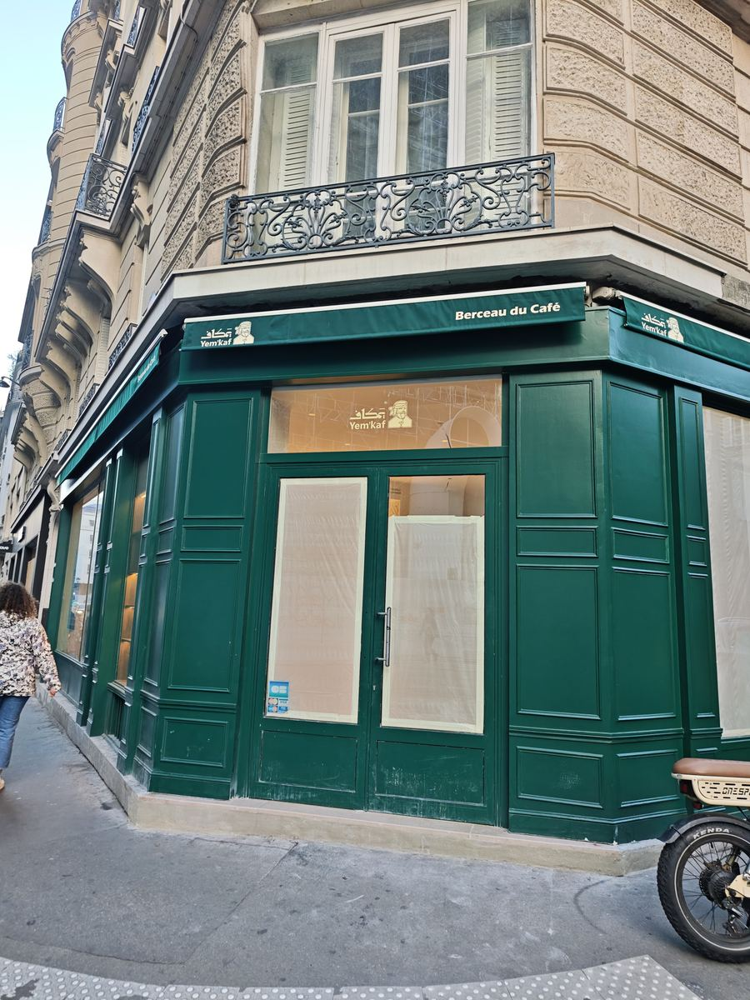
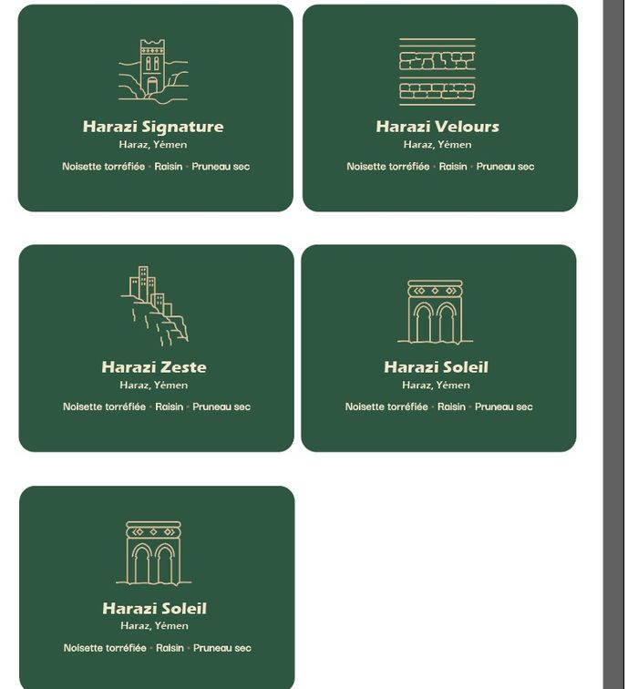
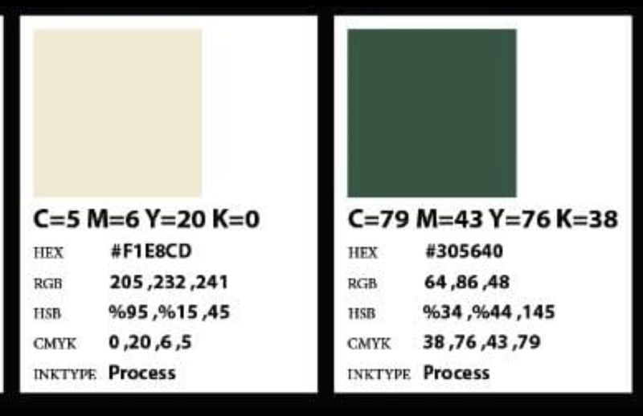
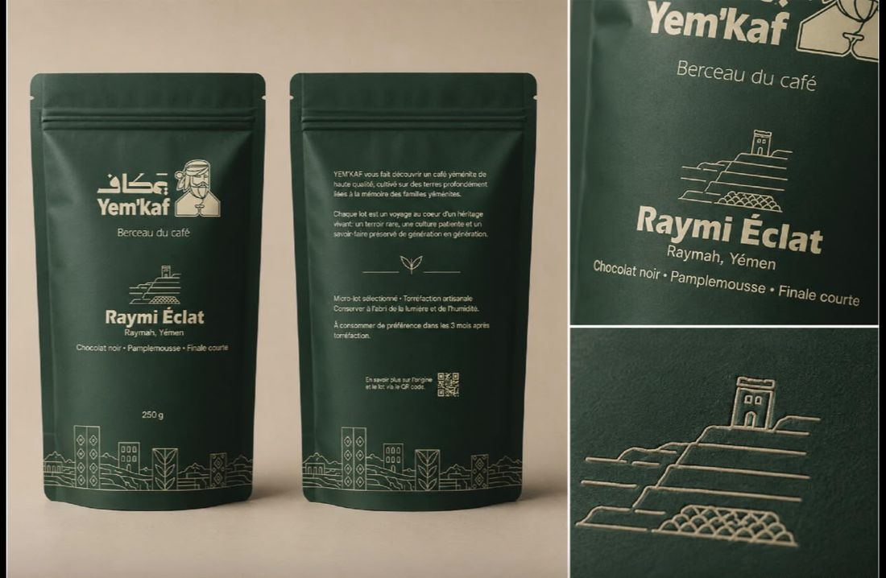
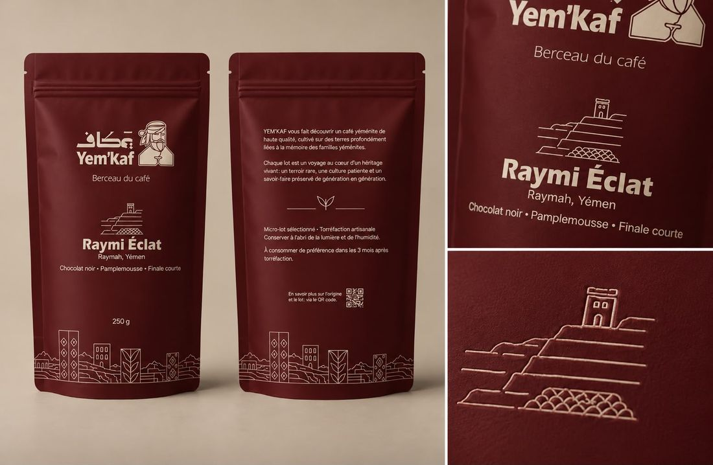

Le Yémen, berceau de la culture du café, servi rue du Renard.
Votre force n’est pas d’être un coffee shop de plus dans le Marais. C’est d’être le seul lieu de Paris où l’on boit le café du pays qui l’a fait connaître au monde, préparé comme on le prépare là-bas : Qishr, Shai Adeni, Qahwa Baydani. Je n’ai trouvé aucun café yéménite à Paris, seulement des restaurants.

Les cinq choses qui comptent le plus
Si vous ne gardez que cette liste, la marque tiendra.
L’origine est la promesse : dites-la juste
« Berceau du café » est fort et défendable si vous parlez de la culture du café : le Yémen est le premier pays à l’avoir cultivé et bu comme boisson (XVe siècle), et le port de Mokha a donné son nom au « moka ». La plante, elle, vient d’Éthiopie. Gardez la signature, mais écrivez « berceau de la culture du café » dans les textes longs : les journalistes et les amateurs vérifieront.
Une identité déjà forte, à tenir partout
Le personnage au turban et à la tasse, la calligraphie koufique يمكاف, la frise des maisons-tours, des terrasses et des feuilles de caféier, le vert profond et le crème. C’est cohérent et rare. La règle : le même logo, le même vert, la même signature sur le store, les sachets, le site, les gobelets et la caisse.
Deux registres de noms, chacun sa place
Décidé le 6 novembre : le café vert vendu aux torréfacteurs garde le nom de son terroir (Harazi, Raymi), le langage des professionnels. Les sachets vendus aux clients prennent les noms franco-yéménites (Port de Mokha, Terrasses de Raymah, Cimes de Haraz…), avec le terroir en sous-titre : « Café du Yémen, région de Raymah ». Les maquettes « Raymi Éclat » sont donc à renommer.
Le rituel avant l’espresso
Tout le Marais sait faire un cappuccino. Personne ne sert un Qishr aux épices ou un Shai Adeni mijoté. Mettez les boissons yéménites en tête de carte, servez une petite tasse de Qishr à chaque nouveau client et racontez-la en une phrase. C’est ce qui fera venir, revenir et publier.
La transparence comme preuve
Village, altitude, producteur, date de torréfaction, prix payé : le QR code du sachet doit mener à la fiche du lot. Le règlement européen anti-déforestation imposera de toute façon la géolocalisation des parcelles (fin 2026 ou mi-2027 selon votre taille). Faites-en un atout de marque avant d’en faire une contrainte.
À corriger avant d’imprimer
Des incohérences repérées dans les fichiers reçus. Aucune n’est grave, toutes coûtent cher une fois imprimées.
Le nuancier donne des valeurs à l’envers. Les lignes RVB, TSL et CMJN sont écrites de droite à gauche, sans doute à cause d’un logiciel réglé en arabe. Un imprimeur ou un développeur qui recopie « RVB 205, 232, 241 » obtiendra un bleu ciel au lieu du crème.
| Point | Ce que j’ai vu | Proposition |
|---|---|---|
| Nom de la marque | « Yem’kaf » (logo), « Yem’Kaf » (zoom de la maquette bordeaux), « YEM’KAF » (brief), « YEMKAF » (enseigne sur le plan du bar) | « Yem’kaf » dans les textes, « YEM’KAF » seulement en capitales. Corriger l’enseigne du plan avant fabrication. |
| Signature | « Berceau du café » (logo, sachets), « Berceau du Café » (store), « YEMENI COFFEE » (enseigne prévue au-dessus du bar) | Une seule signature en français, « Berceau du café ». L’anglais peut venir en second sur le site. |
| Maquettes des sachets | « Raymi Éclat », « Harazi Signature » sur les sachets grand public. | Renommer avec les noms franco-yéménites (par exemple « Terrasses de Raymah »), garder « Raymah, Yémen » en sous-titre. Les noms Harazi et Raymi restent pour le café vert. |
| Fiches des cafés | Les quatre Harazi ont les mêmes notes (Noisette torréfiée · Raisin · Pruneau sec), les quatre Raymi aussi (Chocolat noir · Pamplemousse · Finale courte). « Harazi Soleil » apparaît deux fois. | Des notes propres à chaque lot, issues d’un cupping. Remplacer le doublon par le cinquième café. |
| Mentions du sachet | La maquette indique le poids et « À consommer de préférence dans les 3 mois après torréfaction ». | Ajouter : la dénomination (« Café torréfié en grains » ou « moulu »), une vraie date (« À consommer de préférence avant le … ») et le numéro de lot (étiquette autocollante possible), le nom et l’adresse de l’exploitant, le logo Triman et l’Info-tri (obligatoires depuis 2022, amende jusqu’à 15 000 €). La date de torréfaction est un plus attendu par les amateurs. |
| « Micro-lot sélectionné » | Imprimé au dos de chaque sachet. | À réserver aux vrais micro-lots (Joyau de Marib, Brise de Socotra). Sur un café de la gamme, écrire « Lot sélectionné ». |
| Prix des boissons | Grille du brief entre Terres de Café et L’Arbre à Café. | Décidé le 6 novembre : grille « Premium Yémen » (espresso 3,50 €, V60 8 €, micro-lot 12 €). L’Arbre à Café vend son V60 de 10 à 18 € : un café rare se paie. |
| Décaféiné | « Nuit d’Aden : profil doux, suave, velouté ou décaféiné » (brief). | Le décaféiné yéménite est quasi introuvable. Si vous en proposez un d’une autre origine, il ne peut pas porter un nom yéménite sans le dire (voir plus bas). |


Servir uniquement du café yéménite, ou d’autres cafés aussi ?
Trois options étudiées sur le coût, la marque, le risque d’approvisionnement et le droit. Coût net du Yémen : 62,50 € HT le kilo vendable (votre brief). Autre origine de spécialité : environ 12 € le kilo vert livré en Europe, soit 15 € le kilo vendable (estimation : je n’ai pas trouvé de cotation importateur 2026 ; le cours de l’arabica à New York était à 2,81 $ la livre le 5 novembre 2026).
| Café dans la tasse | Coût net / kg | Espresso 10 g | Boisson lactée 18 g | Sachet 250 g | Gain sur 6 mois* |
|---|---|---|---|---|---|
| 100 % Yémen | 62,50 € | 0,63 € | 1,13 € | 15,63 € | — |
| Assemblage 60 % Yémen / 40 % autre | 43,50 € | 0,44 € | 0,78 € | 10,88 € | ≈ 2 900 € |
| Assemblage 50 / 50 | 38,75 € | 0,39 € | 0,70 € | 9,69 € | ≈ 3 700 € |
| Autre origine seule | 15,00 € | 0,15 € | 0,27 € | 3,75 € | ≈ 7 300 € |
* Si l’on change seulement le café des boissons lactées et des doubles (48 % des tasses), sur les 17 986 tasses du scénario réaliste.
Carte multi-origines
Éthiopie, Colombie, Brésil à côté du Yémen. Vous économisez environ 7 300 € sur 6 mois, mais vous devenez un coffee shop de plus face à Terres de Café, à 5 minutes, sur son propre terrain. La promesse « Berceau du café » perd son sens.
100 % Yémen au comptoir
Espresso, filtre, boissons traditionnelles, sachets d’origine et coffrets : uniquement du Yémen. L’écart réel ne dépasse pas 0,43 € par boisson lactée, soit moins de 2 % du chiffre d’affaires. Pour le lait, Khaled peut tester un assemblage maison de lots yéménites de grade plus accessible : vous restez 100 % Yémen et réduisez le coût.
Le « mix » devient un mélange épicé
Café yéménite moulu avec des épices (cardamome, gingembre, cannelle, clou de girofle), environ 85 / 15, pour préparer une qahwa maison. Proposé à 24 € les 200 g (coût estimé 12,36 €). Il reste 100 % Yémen côté café : la promesse tient. Liste des ingrédients obligatoire sur le sachet.
Le droit. Le Code de la consommation interdit toute présentation trompeuse sur l’origine. Sous une marque nommée Yem’kaf avec la signature « Berceau du café », un client pensera que tout est yéménite. Un café d’une autre origine (mélange, décaféiné) doit donc l’indiquer clairement sur la carte, le sachet et le site, avec les pourcentages.
L’approvisionnement. Depuis la prise de Mokha (septembre 2026), le stock de sécurité et le torréfacteur à façon sont vos vraies protections : la carte reste 100 % Yémen.
Comment parler de Yem’kaf
Une voix chaleureuse, précise et fière. Le Yémen raconté par ses montagnes, ses familles et son savoir-faire, jamais par la guerre ou la misère.
À dire
- « Cultivé en terrasses à 2 000 m d’altitude, dans le Haraz. »
- « Le Qishr (قشر) : une infusion de cosses de café aux épices, que l’on boit au Yémen depuis des siècles. »
- « Lot de [village], récolte [année], torréfié le [date]. »
- « Bienvenue chez Yem’kaf. Vous goûtez notre Qishr ? »
À éviter
- « Le meilleur café du monde » : invérifiable.
- Les images de conflit pour vendre : un article de LADN a déjà épinglé la mode du « café yéménite » sur TikTok.
- « Bio », « équitable » ou « micro-lot » sans certificat ni preuve.
- Tout nom yéménite sur un café qui ne l’est pas.


Décisions de marque à prendre
- Renommer les maquettes des sachets avec les noms franco-yéménites (décision du 6 novembre).
- Faire corriger le nuancier et aligner le vert des fichiers logo sur #305640 (Yousif, avec le graphiste).
- Choisir la signature unique pour l’enseigne au-dessus du bar avant sa fabrication.
- Organiser un cupping des 8 cafés pour écrire de vraies notes de dégustation (Khaled, jeudi).
- Fixer la recette du mélange épicé et sa couleur de sachet (le bordeaux le distinguerait bien).
- Compléter les mentions obligatoires du sachet avant la commande d’impression.